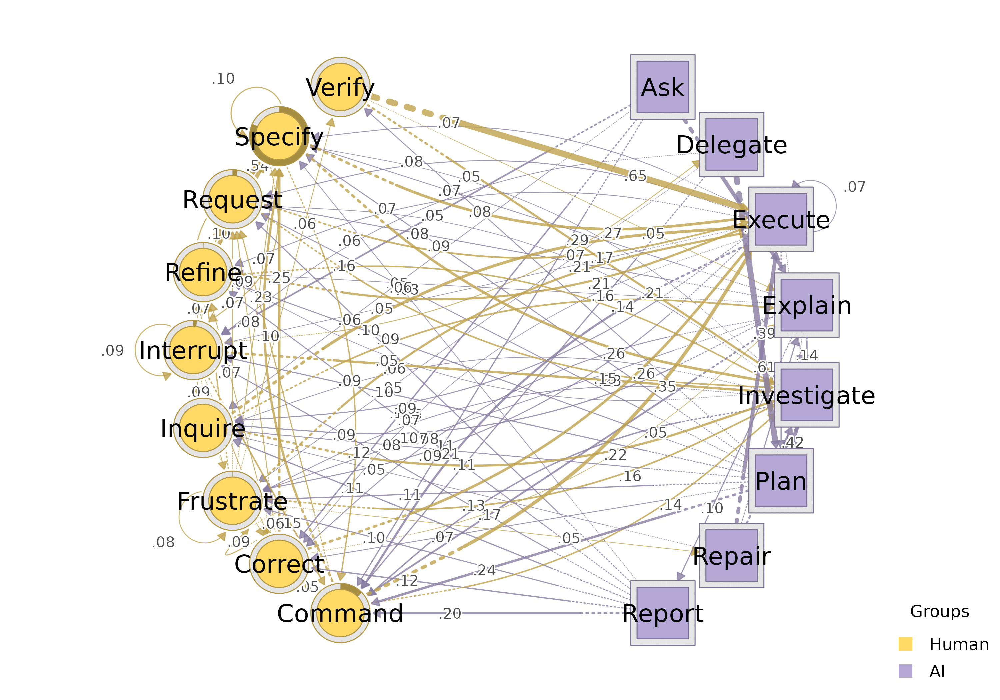
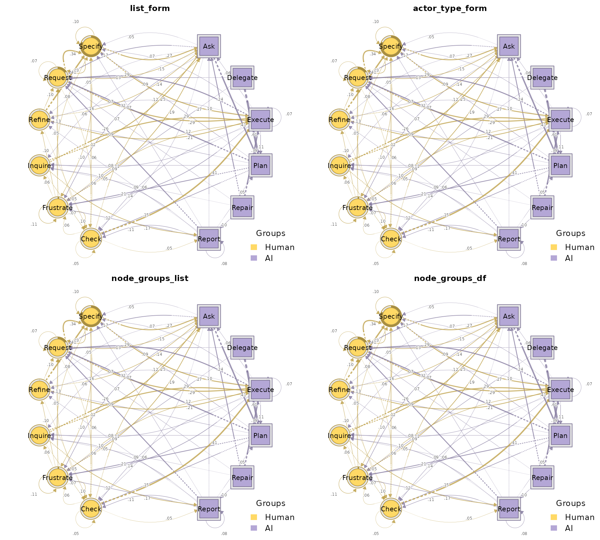
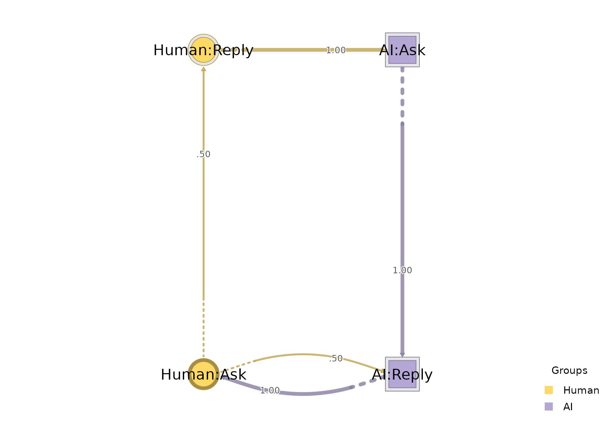
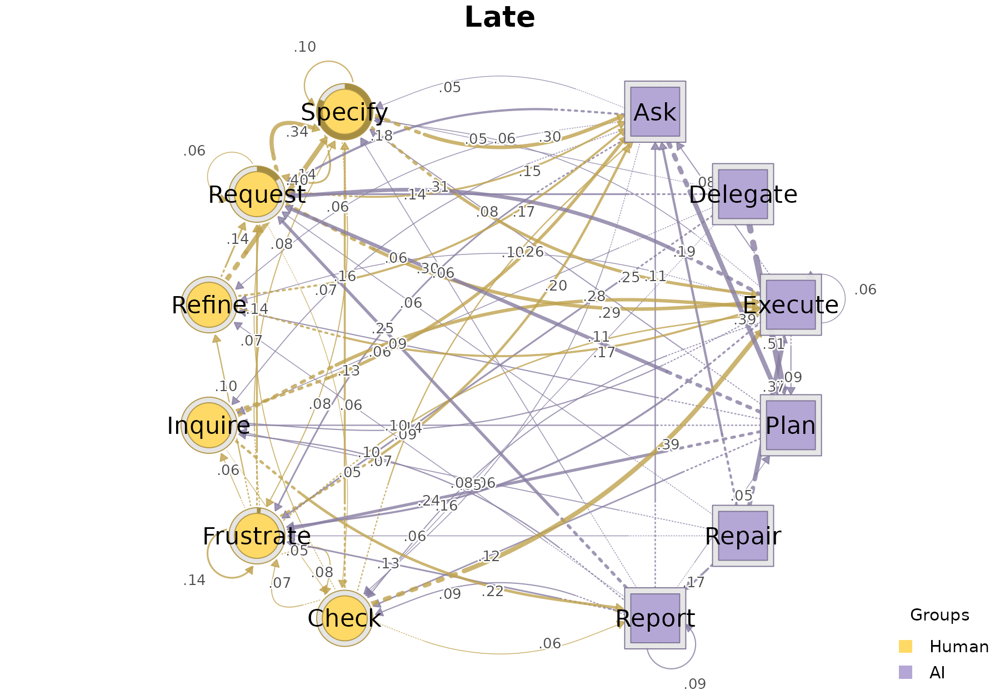
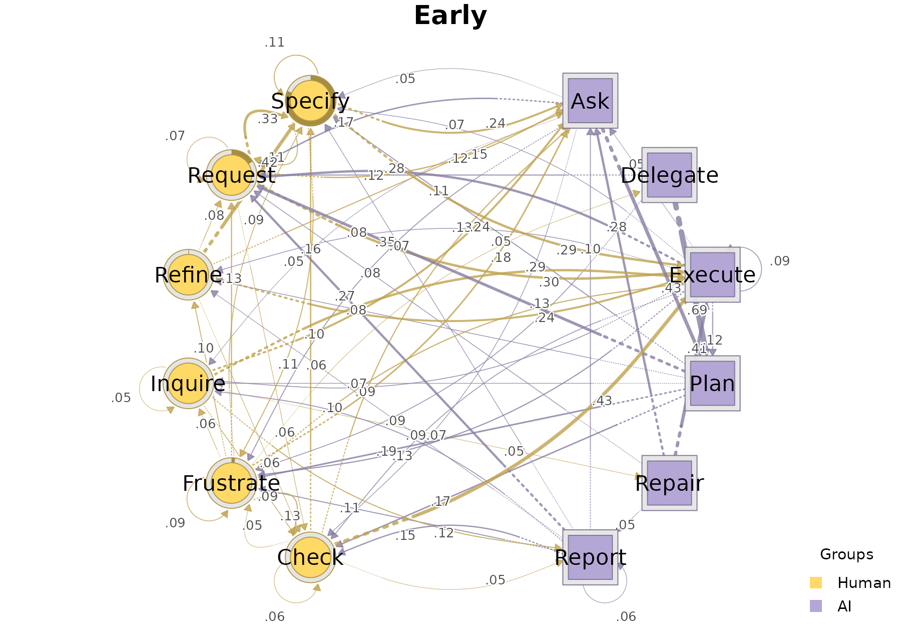

build_htna() accepts raw event data in three
interchangeable shapes:
- a named list of per-actor-type data frames
- a single combined frame with an actor-type column
- a single combined frame with a node-to-actor-type dictionary.
It also accepts fitted clustering and MCML results; those forms are listed in the cheat sheet at the end.
This vignette walks through each form, shows that all three produce
the same network, and then covers two extra parameters that compose with
any input form: disambiguate (for code-label collisions)
and group (for per-cohort networks).
To keep the examples concrete, htna ships four bundled
objects covering every shape the vignette needs:
-
human_simplifiedandai_simplified: per-actor long datasets, one per actor type. These feed Form 1 directly. -
human_ai: the same data row-bound into one long frame with anactor_typecolumn (and a pre-computedphasecohort tag for the grouped example at the end). This feeds Form 2 and Form 3. -
human_ai_codebook— a tidy two-column code → actor-type lookup, ready to pass to Form 3.
Setup
All three long frames share the column schema that
build_htna() expects by default: session_id
(the session argument), code (the
action argument) and order_in_session (the
order argument). Within each session,
order_in_session is a shared time index
across both actors.
Form 1 — Named list of per-actor frames
The most direct form. Each entry is one actor’s long frame; the list
name becomes the actor-type label on the network. The bundled
human_simplified and ai_simplified frames
already have this shape — one per actor type, sharing the canonical
schema.
net_list <- build_htna(list(Human = human_simplified, AI = ai_simplified),
actor = "session_id")
summary(net_list)
#> <htna network>
#> Method: relative
#> Sessions: 429 (max 287 timesteps)
#> Nodes: 12
#> Edges: 135 / 144 (non-zero)
#>
#> Actor types (2):
#> Human (6 nodes): Check, Frustrate, Inquire, Refine, Request, Specify
#> AI (6 nodes): Ask, Delegate, Execute, Plan, Repair, Report
#>
#> Edge counts by actor (rows = source, cols = target):
#> Human AI
#> Human 35 36
#> AI 36 28
#>
#> Network metrics:
#> metric value
#> Node Count 12.00000000
#> Edge Count 135.00000000
#> Network Density 1.00000000
#> Mean Distance 0.02743124
#> Mean Out-Strength 1.00000000
#> SD Out-Strength 0.00000000
#> Mean In-Strength 1.00000000
#> SD In-Strength 0.63085045
#> Mean Out-Degree 11.25000000
#> SD Out-Degree 0.96530730
#> Centralization (Out-Degree) 0.05785124
#> Centralization (In-Degree) 0.05785124
#> Reciprocity 0.96000000
plot_htna(net_list)
Use this form when each actor’s data lives in a separate frame (the typical case when the two streams were prepared independently).
Form 2 — Single combined frame with actor_type
When the data already comes as one long table, tag each row with the
actor-type and pass the column name to actor_type =.
net_actor_type <- build_htna(human_ai,
actor_type = "actor_type",
actor = "session_id",
order = "order_in_session")The actor-type order on the resulting network follows the factor levels (or, for character vectors, the order of first appearance), which is how the actor groups will be ordered in legends and plots.
Form 3 — Single combined frame with node_groups
When the combined frame has no actor-type column,
declare the node-to-actor partition directly via
node_groups. node_groups accepts two
interchangeable shapes:
3a. Named list of code vectors
Extract the per-actor code sets from the bundled per-actor frames and pass them as a named list. The list names become the actor-type labels on the network.
human_codes <- c("Specify", "Request", "Frustrate", "Check", "Inquire", "Refine")
ai_codes <- c("Delegate", "Plan", "Execute", "Ask", "Repair", "Report")
net_node_groups <- build_htna(
human_ai,
actor = "session_id",
node_groups = list(Human = human_codes, AI = ai_codes)
)
net_node_groups
#> Transition Network (relative probabilities) [directed]
#> Weights: [0.002, 0.611] | mean: 0.089
#>
#> Weight matrix:
#> Ask Check Delegate Execute Frustrate Inquire Plan Refine Repair
#> Ask 0.018 0.063 0.000 0.022 0.116 0.063 0.409 0.051 0.004
#> Check 0.117 0.050 0.015 0.411 0.058 0.005 0.008 0.042 0.033
#> Delegate 0.000 0.039 0.000 0.011 0.110 0.032 0.611 0.014 0.000
#> Execute 0.061 0.087 0.000 0.074 0.143 0.088 0.107 0.069 0.002
#> Frustrate 0.194 0.104 0.039 0.119 0.114 0.060 0.004 0.098 0.029
#> Inquire 0.251 0.069 0.027 0.285 0.039 0.033 0.009 0.016 0.042
#> Plan 0.000 0.146 0.000 0.015 0.215 0.083 0.003 0.086 0.005
#> Refine 0.143 0.045 0.006 0.206 0.008 0.014 0.013 0.000 0.025
#> Repair 0.241 0.012 0.028 0.391 0.043 0.047 0.016 0.024 0.004
#> Report 0.102 0.114 0.000 0.009 0.124 0.102 0.050 0.058 0.039
#> Request 0.148 0.055 0.018 0.292 0.016 0.010 0.008 0.009 0.007
#> Specify 0.269 0.017 0.040 0.273 0.096 0.011 0.015 0.002 0.013
#> Report Request Specify
#> Ask 0.028 0.173 0.052
#> Check 0.055 0.049 0.156
#> Delegate 0.018 0.131 0.035
#> Execute 0.010 0.293 0.065
#> Frustrate 0.021 0.135 0.085
#> Inquire 0.170 0.028 0.029
#> Plan 0.026 0.325 0.095
#> Refine 0.023 0.105 0.413
#> Repair 0.103 0.071 0.020
#> Report 0.077 0.257 0.066
#> Request 0.034 0.067 0.336
#> Specify 0.037 0.126 0.101
#>
#> Initial probabilities:
#> Specify 0.818 ████████████████████████████████████████
#> Request 0.156 ████████
#> Frustrate 0.023 █
#> Refine 0.002
#> Ask 0.000
#> Check 0.000
#> Delegate 0.000
#> Execute 0.000
#> Inquire 0.000
#> Plan 0.000
#> Repair 0.000
#> Report 0.0003b. Two-column data frame (codebook)
The same partition expressed as a tidy codebook — one row per code,
one column for the action and one for the actor type. The action column
must match the action parameter (default
"code"); the other column is treated as the actor-type tag.
Column order is irrelevant.
The bundled human_ai_codebook already has this shape, so
it can be passed straight through:
head(human_ai_codebook)
#> code actor_type
#> 1 Specify Human
#> 2 Request Human
#> 3 Frustrate Human
#> 4 Check Human
#> 5 Inquire Human
#> 6 Refine Human
net_node_groups_df <- build_htna(
human_ai,
session = "session_id",
node_groups = human_ai_codebook
)The actor-type ordering follows the column’s factor levels (if a factor) or the order of first appearance (if a character vector). Use this form when your code/actor mapping already lives in a tidy lookup table.
All forms produce the same network
build_htna() resolves every input shape to the same
combined sequence and forwards to
Nestimate::build_network(), so the four networks have
identical nodes, actor partition and edge weights. Passing them to
plot_htna() as a named list draws one network per element,
titled with its name; the layout, colours, and edges are
indistinguishable:
forms <- list(
list_form = net_list,
actor_type_form = net_actor_type,
node_groups_list = net_node_groups,
node_groups_df = net_node_groups_df
)
op <- par(mfrow = c(2, 2), mar = c(1, 1, 3, 1))
plot_htna(forms)
par(op)Handling code-label collisions with disambiguate =
If both actor types share a code label (e.g. both Human and AI have a
code called Ask and another code called
Reply), build_htna() errors by default —
keeping such states distinct is usually what you want. Pass
disambiguate = TRUE to prefix every code with its
actor-type label so the two Ask nodes become
Human:Ask and AI:Ask.
overlap <- data.frame(
session_id = rep(paste0("s", seq_len(3)), each = 6),
code = rep(c("Ask", "Reply", "Ask", "Reply", "Ask", "Reply"), 3),
actor_type = rep(c("Human", "Human", "AI", "AI", "Human", "AI"), 3),
order_in_session = rep(seq_len(6), 3),
stringsAsFactors = FALSE
)
# Without disambiguate=, this errors:
try(build_htna(overlap, actor_type = "actor_type"))
#> Error : Code(s) appear in more than one actor group: Ask, Reply. Pass `disambiguate = TRUE` to prefix codes with the actor label.
# With disambiguate=, the two `Ask`s become distinct nodes:
net_dis <- build_htna(overlap, actor_type = "actor_type",
disambiguate = TRUE)
summary(net_dis)
#> <htna network>
#> Method: relative
#> Sessions: 3 (max 6 timesteps)
#> Nodes: 4
#> Edges: 5 / 16 (non-zero)
#>
#> Actor types (2):
#> Human (2 nodes): Human:Ask, Human:Reply
#> AI (2 nodes): AI:Ask, AI:Reply
#>
#> Edge counts by actor (rows = source, cols = target):
#> Human AI
#> Human 1 2
#> AI 1 1
#>
#> Network metrics:
#> metric value
#> Node Count 4.0000000
#> Edge Count 5.0000000
#> Network Density 0.4166667
#> Mean Distance 1.5833333
#> Mean Out-Strength 1.0000000
#> SD Out-Strength 0.0000000
#> Mean In-Strength 1.0000000
#> SD In-Strength 0.4082483
#> Mean Out-Degree 1.2500000
#> SD Out-Degree 0.5000000
#> Centralization (Out-Degree) 0.3333333
#> Centralization (In-Degree) 0.3333333
#> Reciprocity 0.4000000
plot(net_dis)
Splitting into cohorts with group =
Any of the three input forms can additionally be split into
per-cohort networks by passing group = — the result is an
htna_group, one htna network per level of the
grouping column. human_ai already ships with a
phase column tagging each session as Early or
Late (a chronological split: first-half of sessions =
early, rest = late), so the cohort build is a one-liner:
grp <- build_htna(human_ai, actor_type = "actor_type", group = "phase")
grp
#> Group Networks (2 groups)
#>
#> Group Nodes Edges Weights
#> Late 12 134 [0.001, 0.508]
#> Early 12 135 [0.001, 0.689]Pass grp as it is to the downstream verbs
(plot_htna(), bootstrap_htna(),
permutation_htna(), centralities_htna(), …);
they iterate over the cohorts.
plot_htna(grp)

Cheat sheet
| Form | When to use |
|---|---|
list(Actor1 = a1, Actor2 = a2) |
Each actor’s data is in its own frame |
df, actor_type = "actor_type" |
One combined frame, actor identity in a row-level column |
df, node_groups = list(Actor1 = ..., Actor2 = ...) |
One combined frame; partition declared as a named list of codes |
df, node_groups = data.frame(code = ..., actor_type = ...) |
One combined frame; partition declared as a tidy codebook |
Nestimate::build_clusters(htna, ...) |
Distance-based sequence clusters; returns one HTNA network per cluster |
Nestimate::cluster_mmm(htna, ...) |
Already-fitted latent Markov clusters; preserves fitted weights and posterior diagnostics |
tna::cluster_sequences(...), node_groups = ... |
Legacy sequence-clustering result; builds one HTNA network per cluster |
Nestimate::build_mcml(...) |
Node clusters of a fitted MCML model become the actor groups; one full node-level HTNA is rebuilt from the source data |
+ actor = "user_id" |
Identify the individual actor that performed each event (forwarded
to Nestimate::build_network()) |
+ disambiguate = TRUE |
Same code label appears in more than one actor type |
+ group = "phase" |
Build one network per cohort/phase |
The row/list forms build one network directly. Clustering forms build
or preserve an outer htna_group, while every child keeps
the same actor partition.